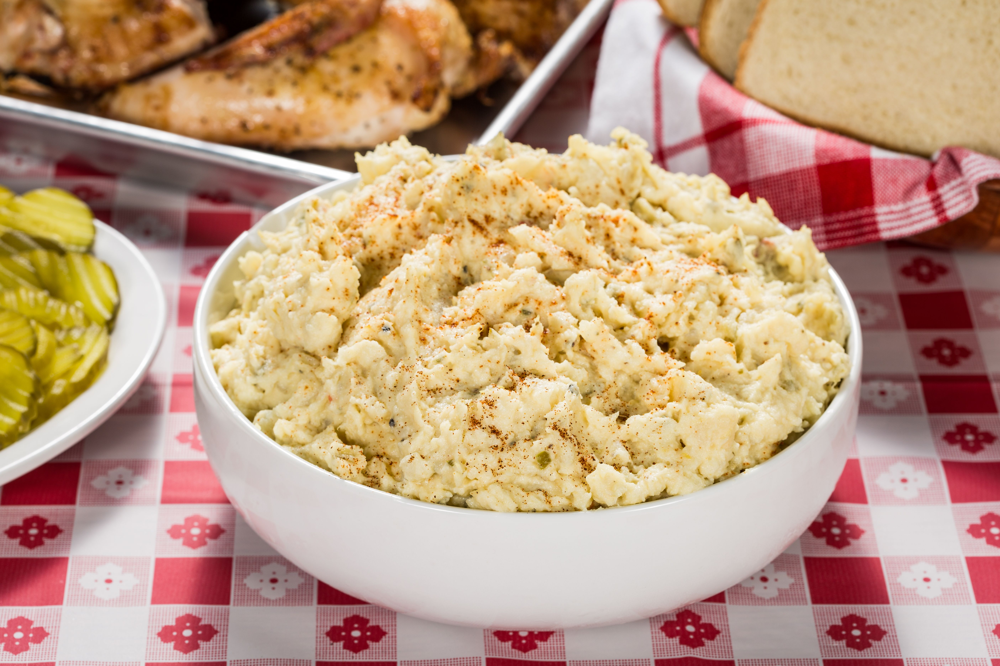

A classic potato salad recipe. Most potato salads look and taste better when made with low-starch red boiling potatoes. You can use any size of this variety, but the small new potatoes cook 10 to 15 minutes faster than the larger ones. Choose potatoes that are all roughly the same size, if possible, so they cook in the same time.
Place potatoes in a pot with water to cover. Bring to a boil, cover and simmer, stirring to ensure even cooking, until a thin-bladed paring knife or a metal skewer inserted into a potato can be removed with no resistance, 25 to 30 minutes. Drain, rinse under cold water, and drain again. Cool slightly.
Cut warm potatoes into 3/4-inch dice. Layer them in a bowl, seasoning with vinegar, salt, and pepper as you go.
Cut eggs, celery, and pickle in 1/4-inch dice. Thinly slice scallions. Add to potatoes, along with parsley. Stir in mayonnaise and mustard until everything is combined. Chill, covered, before serving.